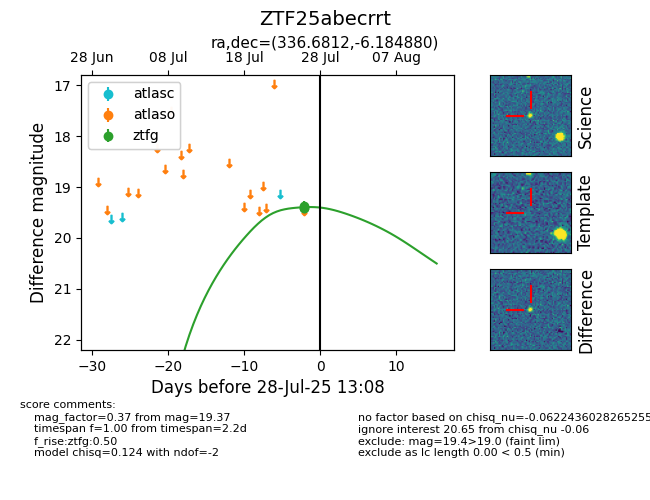

Target ZTF25abecrrt at 2025-07-28 13:08, see:
FINK: fink-portal.org/ZTF25abecrrt
Lasair: lasair-ztf.lsst.ac.uk/objects/ZTF25abecrrt
ALeRCE: alerce.online/object/ZTF25abecrrt
alt names
ZTF25abecrrt (ztf,fink)
coordinates:
equatorial (ra, dec) = (336.6812,-6.18488)
galactic (l, b) = (57.6407,-49.75855)
photometry
last ztfg=19.37
3 ztfg detections
